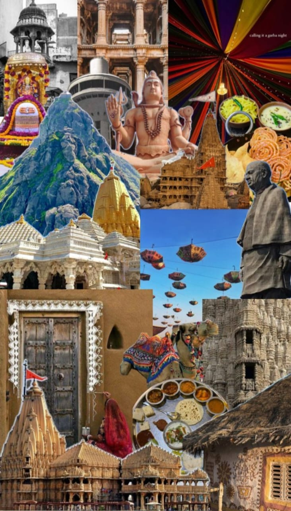
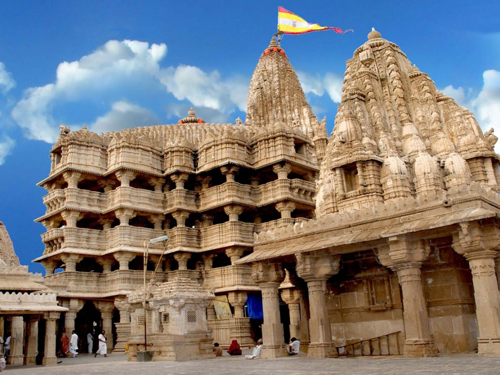

 |
“A State of Rich Traditions, Culture, and Progress” |
Gujarat is a western Indian state with a long coastline along the Arabian Sea. It is known for its rich history, strong cultural traditions, and business culture.
Gujarat has a very ancient and rich history that stretches back thousands of years.
The region was an important part of the Indus Valley Civilization, with sites like Lothal, which was one of the world’s earliest known ports and a major center of trade and shipbuilding.
This shows that Gujarat had strong connections with other civilizations through sea routes even in ancient times.
Later, Gujarat came under the rule of powerful dynasties such as the Mauryas and Guptas, which helped in the spread of art, culture, and administration.
During the medieval period, Gujarat emerged as an important political and cultural region under the Gujarat Sultanate.
This era saw the development of beautiful architecture, mosques, stepwells, and cities that reflected a blend of Indian and Islamic styles.
Because of its long coastline, Gujarat became a major hub for international trade with Arabia, Africa, and Europe.
Merchants and traders from Gujarat were well known for their business skills and wealth.
In later years, parts of Gujarat came under Maratha rule, which influenced its political structure and military strength.
Gujarat played a very important role in India’s freedom struggle and produced great leaders.
It is the birthplace of Mahatma Gandhi, who led the nation with the principles of truth and non-violence.
After India gained independence, Gujarat was formed as a separate state in 1960.
Today, Gujarat stands as a symbol of ancient heritage, strong cultural roots, and economic progress.
Gujarat has a rich and lively culture that is deeply connected to traditions and values.
People of Gujarat are known for their simple lifestyle, discipline, and strong moral values.
Family life is very important, and respect for elders is deeply followed in society.
Traditional clothing such as chaniya choli for women and kediyu with dhoti for men is worn, especially during festivals.
Folk dances like Garba and Dandiya bring people together and are a symbol of joy and unity.
Gujarati lifestyle is also reflected in its food habits, which mostly include vegetarian dishes.
Even with modern development, people of Gujarat proudly preserve their cultural identity and traditions.
| Season | Months | Temperature(Approx.) | Tourist Crowd Level |
|---|---|---|---|
| Summer | March-June | 28°C to 42°C | Fewer |
| Monsoon | July-September | 25°C to 35°C | Medium |
| Winter | October-February | 12°C to 28°C | High |
Gujarat has many important cities that play a major role in its culture, economy, and development. Each city has its own identity, shaped by history, trade, education, and industry. Together, these cities contribute to Gujarat’s growth and cultural richness.
|
|
|
 

|


|
Gujarat is a vibrant state located on the western coast of India along the Arabian Sea.
It is known for its ancient history, strong cultural roots, and progressive development.
Gujarat has been an important center of trade and commerce since ancient times because of its long coastline and ports.
The state played a major role in India’s freedom struggle and is the birthplace of Mahatma Gandhi, the leader of non-violence.
Gujarat’s culture is rich and colorful, deeply connected to traditions and values.
Festivals like Navratri are celebrated with great enthusiasm through Garba and Dandiya dances.
Somnath Jyotirlinga is one of the twelve sacred Jyotirlingas of Lord Shiva and an important religious site in Gujarat.
Adalaj Stepwell is a famous historical stepwell near Ahmedabad.
It was built in the 15th century and is known for its beautiful carvings and architecture.
The stepwell served as a resting and water source for travelers in ancient times.
People of Gujarat follow a simple lifestyle, value family bonds, and show warm hospitality.
Traditional clothing, folk music, handicrafts, and vegetarian food reflect the cultural identity of the state.
The state also has diverse landscapes, including deserts, hills, forests, and a long coastline.
Gujarat is home to famous wildlife areas such as Gir Forest, the only natural habitat of Asiatic lions.
Modern cities, industries, and educational institutions show Gujarat’s growth and development.
Overall, Gujarat is a perfect blend of ancient heritage, rich culture, natural beauty, and modern progress.
The best time to visit Gujarat is October to March.
The weather is pleasant and suitable for sightseeing and outdoor activities.
Summers are hot, and monsoon months are humid.
Gujarat is well connected by air, rail, and road.
Major cities have airports and railway stations.
State buses, taxis, and local transport are easily available.